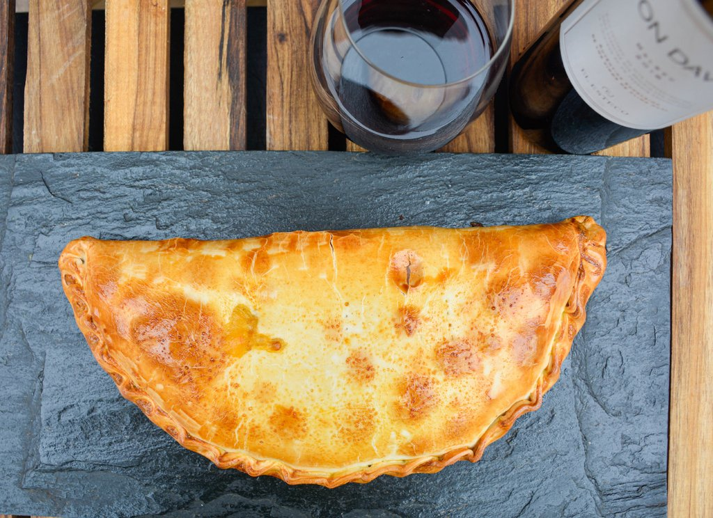

Tarta de Jamón y Queso

Tarta de jamón y queso con una sola pascualina
Con esta receta podrás hacer una rica tarta de
jamón y queso usando una sola pascualina.
Se trata de una comida deliciosa y sencilla,
convirtiéndola en un plato ideal para esos momentos
donde no sabemos qué comer o simplemente no tenemos
muchas ganas de cocinar.
Ingredientes
- Una pascualina o tapa de tarta
- 200 gramos de jamón cocido
- 200 gramos de queso cremoso
- Dos huevos
- Sal
- Pimienta
- Manteca
Pasos
- Romper y poner los dos huevos en un bowl
- Agregar un puñado de sal y poca pimienta
- Batir por un minuto
- Picar el queso cremoso en pequeños cuadraditos (del tamaño de una uña)
- Hacer un picadillo con el jamón
- Arrojar el queso y el jamón en el bowl y batirlos
hasta quedar una mezcla homogénea
- Precalentar el horno a 200 grados celsius
- En una fuente o asadera esparcir un poco de manteca y
colocar la pascualina arriba
- Verter el picadillo en una mitad de la pascualina
- Doblar la pascualina a la mitad y cerrarla con un repulgue
- Esparcir un poco de manteca sobre la pascualina
- Colocar en el horno por 25 minutos
- Dejar enfriar 5 minutos y ¡Disfrutar!